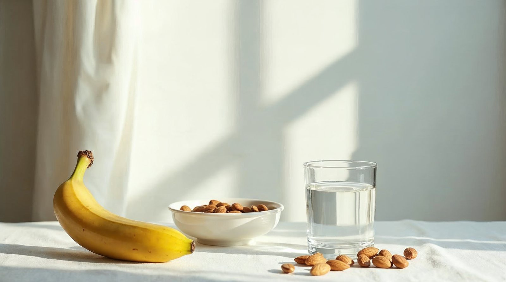
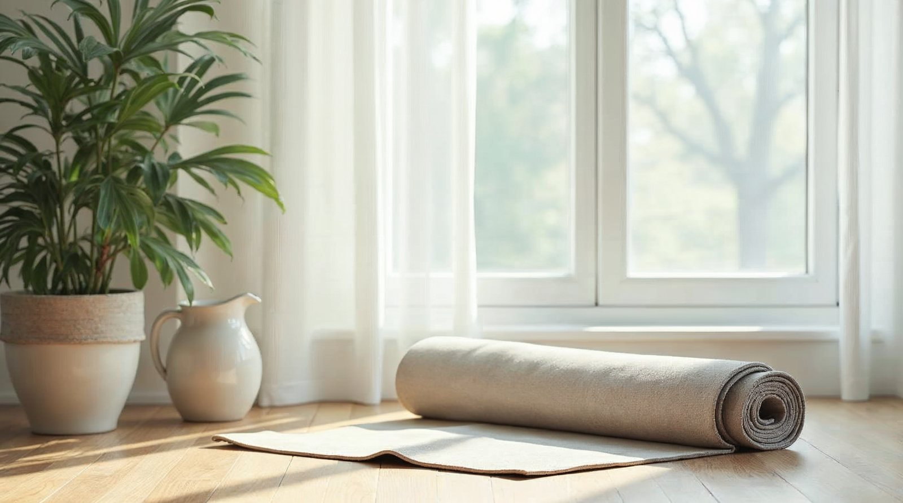
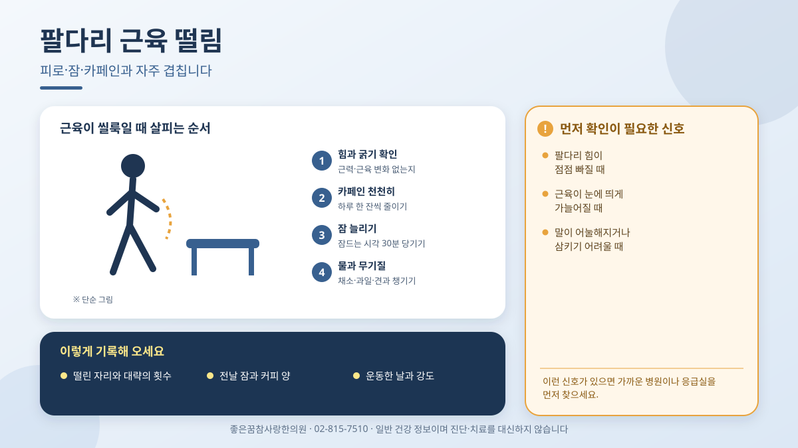

이종호 한의사 감수좋은꿈참사랑한의원 대표원장 (한의사 면허번호 19769)발행 2026-11-26 · 수정 2026-11-26
이 글의 차례
소파에 앉아 텔레비전을 보는데 종아리 한쪽이 톡, 톡 튀어 오릅니다. 바지를 걷어 보니 피부 아래에서 근육이 작은 물고기처럼 꿈틀거립니다. 아프지는 않은데 며칠째 그러니 신경이 쓰입니다. 밤에 누워도 팔뚝이며 허벅지 여기저기서 씰룩거림이 느껴집니다.
이런 근육 떨림 때문에 진료실을 찾는 분들이 생각보다 많습니다. 대부분은 아프지 않아서 참고 지내다가, 인터넷에서 무서운 병 이름을 보고 걱정이 커져서 오십니다. 그 마음을 잘 압니다. 몸이 내 뜻과 상관없이 움직이면 누구나 불안해집니다.
먼저 말씀드리고 싶은 것은, 이런 작은 근육 떨림은 건강한 사람에게도 아주 흔하다는 점입니다. 피곤한 날, 잠을 설친 날, 커피를 많이 마신 날, 운동을 무리한 다음 날에 근육이 저절로 씰룩이는 경험은 많은 분들이 해 보셨을 겁니다.
다만 떨림의 모양과 함께 오는 다른 변화를 살펴보는 것은 중요합니다. 이 글에서는 흔한 근육 떨림이 어떤 모양인지, 어떤 경우에 더 살펴봐야 하는지, 생활에서 무엇을 해 볼 수 있는지를 차근차근 정리했습니다.

근육 떨림은 어떤 모양인가요
흔한 근육 떨림은 근육의 아주 작은 묶음 하나가 저절로 짧게 수축하는 것입니다. 피부 아래에서 톡톡 튀거나, 꿈틀거리거나, 벌레가 기어가는 듯한 모양으로 보입니다. 아프지 않고, 팔다리를 움직이는 힘에는 변화가 없는 것이 특징입니다.
자주 생기는 자리는 종아리, 허벅지, 팔뚝, 엄지손가락 아래 두툼한 곳, 눈꺼풀 등입니다. 한곳에서만 생기기도 하고, 이곳저곳 옮겨 다니기도 합니다. 가만히 쉬고 있을 때, 잠들기 전, 운동을 마친 뒤에 더 잘 느껴진다고 말씀하시는 분이 많습니다.
떨림은 몇 초 만에 사라지기도 하고, 하루에 수십 번씩 반복되기도 합니다. 신경을 쓰면 쓸수록 더 자주 느껴지는 것도 흔한 특징입니다. 실제로 늘었다기보다 내가 더 잘 알아차리게 된 경우도 많습니다.
왜 근육이 저절로 씰룩일까요
근육은 신경에서 오는 신호를 받아 움직입니다. 몸이 지쳐 있거나, 각성 상태가 높아져 있거나, 몸속 무기질의 균형이 조금 흔들리면 신경 끝이 평소보다 예민해져 작은 신호를 저절로 내보내는 일이 생깁니다. 이것이 근육 떨림으로 나타납니다.
진료실에서 자주 함께 보이는 흐름은 다음과 같습니다. 하나만 있기보다 여러 가지가 겹쳐 있는 경우가 많습니다.
- 잠이 짧거나 얕은 날이 이어질 때
- 커피, 에너지 음료, 진한 차를 많이 마실 때
- 마감, 시험, 갈등처럼 긴장이 이어질 때
- 평소보다 운동을 많이 하거나 오래 서 있었을 때
- 땀을 많이 흘리거나 설사·구토 뒤처럼 몸에서 물과 무기질이 빠졌을 때
- 일부 약을 새로 시작했을 때
갑상선 기능이 지나치게 높을 때나 일부 무기질 수치가 맞지 않을 때도 근육 떨림이 늘 수 있습니다. 두근거림, 체중 변화, 손 떨림, 더위를 심하게 타는 느낌이 함께 있다면 내과에서 혈액 검사를 받아 보시길 권합니다.
다른 떨림과는 어떻게 다른가요
근육 떨림과 헷갈리기 쉬운 것으로는 손 떨림, 근육 경련, 눈꺼풀 떨림, 얼굴 한쪽 떨림이 있습니다. 이름이 비슷해 보이지만 모양과 살피는 방향이 다릅니다.
컵을 들거나 글씨를 쓸 때 손이 리듬 있게 떨리는 것은 본태성 떨림 같은 손 떨림에 가깝습니다. 근육 떨림은 손 전체가 흔들리는 것이 아니라 근육의 작은 자리만 톡톡 튀는 모양입니다.
종아리에 쥐가 나는 것은 근육 전체가 단단하게 오그라들며 아픈 경련입니다. 근육 떨림은 아프지 않고 짧게 지나가는 것이 다릅니다. 다만 둘이 함께 찾아오는 경우도 있어서, 쥐가 자주 나는 분은 함께 말씀해 주세요.
눈 밑이 며칠 파르르 떨리는 것은 눈꺼풀 떨림으로, 근육 떨림과 같은 흐름에서 오는 경우가 많습니다. 반면 눈가와 입꼬리가 함께 씰룩이며 점점 번진다면 반측안면경련을 생각해 볼 수 있어 신경과 진찰을 권합니다.
걱정이 떨림을 키우기도 합니다
근육 떨림을 겪는 분들 가운데는 걱정 때문에 잠을 설치고, 하루에도 몇 번씩 떨리는 자리를 들여다보며 확인하시는 분이 많습니다. 그런데 긴장과 잠 부족은 근육 떨림을 더 늘리는 쪽으로 작용합니다. 걱정이 떨림을 키우고, 떨림이 걱정을 키우는 고리가 생기는 셈입니다.
이 고리를 끊으려면 먼저 내 떨림이 어떤 모양인지 정확히 확인하는 것이 도움이 됩니다. 힘이 빠지거나 근육이 가늘어지는 변화가 없는지 진찰로 확인하고, 필요하면 신경과 검사를 받아 보는 것이 막연한 걱정보다 마음을 훨씬 편하게 합니다.
확인을 받은 뒤에는 떨림을 들여다보는 횟수를 의식적으로 줄여 보세요. 떨림을 기록하는 것은 하루 한 번 저녁에만 하고, 그 밖의 시간에는 다른 일에 마음을 두는 연습을 해 보시는 겁니다. 마음이 조금 느슨해지면 떨림도 덜 느껴지는 분이 많습니다.
운동과 근육 떨림
운동을 시작한 지 얼마 안 된 분이나 평소보다 강도를 높인 분은 운동한 근육에서 떨림을 자주 느낍니다. 근육이 지친 상태에서 회복하는 동안 생기는 것으로, 대개 충분히 쉬면 가라앉는 경우가 많습니다. 운동을 멈출 필요는 없지만, 강도를 조금 낮추고 쉬는 날을 넣어 보세요.
운동 뒤에는 물을 충분히 드시고, 땀을 많이 흘린 날에는 채소와 과일, 견과류처럼 무기질이 고루 든 음식을 챙겨 드시는 것이 좋습니다. 운동 전후로 종아리와 허벅지를 가볍게 늘려 주는 것도 도움이 될 수 있습니다. 한 번에 20~30초씩, 아프지 않은 범위에서 천천히 늘려 주세요.
달리기나 등산처럼 다리를 많이 쓰는 운동을 즐기시는 분은 종아리 떨림을 자주 겪으십니다. 이런 분들은 잠자리에 들기 전 따뜻한 물로 다리를 씻고, 종아리를 아래에서 위로 부드럽게 쓸어 올려 주시면 한결 편하게 느끼실 수 있습니다.
하루 중 언제 더 잘 느껴질까요
근육 떨림은 바쁘게 움직일 때보다 가만히 쉬고 있을 때 더 잘 느껴집니다. 일할 때는 다른 감각에 묻혀 있다가, 소파에 앉거나 잠자리에 누우면 몸에 주의가 모이면서 작은 씰룩임까지 크게 느껴지는 것입니다.
그래서 많은 분들이 밤에 떨림이 심해진다고 말씀하십니다. 실제로 밤에 늘어나는 경우도 있지만, 조용한 시간에 더 잘 알아차리게 된 경우도 많습니다. 잠들기 전 떨림이 신경 쓰인다면 조용한 음악이나 라디오를 작게 틀어 주의를 살짝 다른 곳으로 옮겨 보세요.
아침에 일어났을 때 떨림이 거의 없다가 오후로 갈수록 늘어난다면 하루 동안 쌓인 피로와 카페인이 영향을 주고 있을 수 있습니다. 이런 분은 오후 커피를 먼저 줄여 보시는 것이 좋습니다.
카페인과 잠, 둘을 함께 보는 이유
근육 떨림이 있는 분들께 커피를 여쭈면 "하루 서너 잔은 마신다"는 대답이 자주 돌아옵니다. 커피는 신경을 깨우는 작용이 있어서 많이 마시면 근육 끝의 신경도 함께 예민해질 수 있습니다. 에너지 음료와 진한 녹차, 초콜릿에도 카페인이 들어 있습니다.
그런데 카페인을 많이 마시는 데는 대개 이유가 있습니다. 잠이 부족해서 낮에 버티려고 마시는 경우가 많기 때문입니다. 잠이 부족하면 떨림이 늘고, 그래서 커피를 더 마시고, 커피 때문에 잠이 더 얕아지는 흐름이 생깁니다.
그래서 커피를 줄이는 것과 잠을 늘리는 것을 함께 시작하시길 권합니다. 오후 2시 이후에는 커피 대신 따뜻한 보리차나 물을 드시고, 그 대신 잠드는 시각을 30분 앞당겨 보세요. 둘이 함께 움직일 때 변화가 더 잘 보입니다.
약과 영양제도 함께 확인합니다
천식 흡입약이나 일부 감기약, 갑상선 약, 이뇨제, 일부 정신건강의학과 약처럼 근육 떨림과 관련될 수 있는 약들이 있습니다. 새로 약을 시작한 뒤 떨림이 생겼다면 처방한 선생님께 알려 주세요. 약을 혼자 끊는 것은 권하지 않습니다.
영양제를 여러 가지 드시는 분들도 많습니다. 좋은 마음으로 챙겨 드시는 것이지만, 성분이 겹치거나 몸에 맞지 않는 경우도 있으니 진료실에 오실 때 드시는 영양제의 이름이나 사진을 함께 가져와 주세요.
떨림이 오래갈 때 마음을 다루는 법
몇 주, 몇 달씩 떨림이 이어지면 지치고 우울해지기 쉽습니다. 확인을 받고 나서도 떨림이 느껴질 때마다 다시 불안이 올라오는 분이 많습니다. 이럴 때는 떨림을 없애는 것만 목표로 삼기보다, 떨림이 있어도 하루를 잘 보내는 쪽으로 목표를 조금 옮겨 보시길 권합니다.
떨림이 느껴질 때 '또 시작이네' 하고 짧게 알아차린 뒤, 숨을 길게 한 번 내쉬고 하던 일로 돌아가는 연습을 해 보세요. 처음에는 어렵지만 반복할수록 떨림에 붙잡혀 있는 시간이 짧아집니다.
걱정이 너무 커서 일상이 흔들리고 잠을 거의 이루지 못한다면, 그 걱정 자체도 돌봄이 필요한 신호입니다. 진료실에서 편하게 말씀해 주시면 몸과 함께 마음의 긴장도 살펴보고, 필요하면 정신건강의학과 상담도 안내해 드립니다.
먼저 이렇게 여쭙니다
- 떨림은 어느 자리에서, 언제부터 생겼나요?
- 하루에 얼마나 자주, 어떤 때 더 잘 느껴지나요?
- 팔다리 힘이 빠지거나 물건을 자주 떨어뜨리는 일이 있나요?
- 근육이 가늘어진 곳이나 저림, 감각 변화가 있나요?
- 커피, 에너지 음료, 술은 하루에 얼마나 드시나요?
- 잠과 긴장, 운동량은 요즘 어떠신가요?
- 최근 새로 시작한 약이나 영양제가 있나요?
일상에서 먼저 해 볼 수 있는 것
- 커피와 에너지 음료를 하루 한 잔씩 줄여 보기(한꺼번에 끊기보다 천천히)
- 잠드는 시각을 일정하게 맞추고 수면 시간 늘리기
- 물을 하루 동안 나눠 자주 마시기
- 채소, 과일, 콩, 견과류처럼 무기질이 고루 든 음식 챙기기
- 운동 강도를 조금 낮추고 쉬는 날 넣기
- 잠들기 전 따뜻한 물로 다리를 씻고 가볍게 늘려 주기
- 떨림 확인은 하루 한 번 저녁에만 하기
이렇게 2~3주 지내 보면서 떨림의 횟수가 어떻게 달라지는지 지켜보세요. 생활을 조절했을 때 떨림이 줄어든다면, 지금의 떨림이 생활의 흐름과 맞닿아 있다는 신호일 수 있습니다. 변화가 없더라도 실망하지 마시고, 기록을 가지고 오셔서 다른 실마리를 함께 찾아보면 됩니다.
한의원에서 함께 살필 수 있는 경우
- 신경과 진찰에서 큰 이상은 없다는데 떨림이 자주 느껴지는 경우
- 잠이 얕고 피로가 쌓여 있으며 떨림이 함께 이어지는 경우
- 긴장과 걱정이 커서 떨림을 자꾸 확인하게 되는 경우
- 쥐가 자주 나고 다리가 무겁게 느껴지는 경우
- 손발이 차고 쉽게 지치는 경우
좋은꿈참사랑한의원에서는 먼저 근력과 감각의 변화가 없는지 확인하고, 맥을 짚어 몸 전체의 상태를 살핍니다. 그다음 침, 온열 관리, 한약 상담 가운데 지금 상태에 맞는 것을 진찰 뒤에 정합니다.
한약을 상의할 때는 드시는 약과 영양제를 모두 확인하고 신중하게 정합니다. 갑상선 약이나 다른 약을 드시고 계신다면 처방한 선생님과 상의 없이 멈추지 않으셔야 합니다. 임신 중이시라면 먼저 알려 주시고 산부인과와도 상의해 주세요.

이렇게 기록해 오시면 상담이 쉬워집니다
- 떨림이 생긴 자리와 대략의 횟수(하루 한 번 저녁에 적기)
- 떨리는 모습을 찍은 짧은 영상
- 전날 잠든 시각과 깬 시각
- 커피, 에너지 음료, 술을 드신 양
- 운동한 날과 강도, 긴장했던 일
기록은 떨림을 자꾸 들여다보기 위한 것이 아니라, 생활과 떨림 사이의 연결을 찾기 위한 것입니다. 하루 한 번, 저녁에 몇 줄만 적고 덮어 두세요. 두세 주 뒤 기록을 함께 펼쳐 보면 잠이 짧았던 날이나 커피를 많이 마신 날과 떨림이 겹치는지 보이기 시작합니다.
이런 증상은 먼저 확인이 필요합니다
- 떨림과 함께 팔다리 힘이 점점 빠지거나 근육이 눈에 띄게 가늘어지는 경우
- 말이 어눌해지거나 음식을 삼키기 어렵고 숨이 차는 변화가 함께 오는 경우
이런 신호가 있으면 한의원보다 가까운 병원이나 응급실을 먼저 찾으세요.
함께 읽으면 좋은 글
- 눈 밑이나 눈꺼풀이 며칠째 파르르 떨리는 눈꺼풀 떨림은 어떻게 살피나요?
- 컵을 들거나 글씨를 쓸 때 손이 떨리는 본태성 떨림은 어떻게 살피나요?
- 밤마다 종아리에 쥐가 나서 깨는 근육 경련은 왜 생기고 무엇을 살피나요?
- 얼굴 한쪽 눈가와 입꼬리가 함께 씰룩이는 반측안면경련은 어떻게 살피나요?
- 커피와 에너지 음료로 버티다 밤에 잠이 안 올 때는 어떻게 하나요?

여쭙는 것
- 떨림은 어느 자리에서, 언제부터 생겼나요?
- 하루에 얼마나 자주, 어떤 때 더 잘 느껴지나요?
- 팔다리 힘이 빠지거나 물건을 자주 떨어뜨리는 일이 있나요?
생활에서 해 볼 것
- 커피와 에너지 음료를 하루 한 잔씩 줄여 보기(한꺼번에 끊기보다 천천히)
- 잠드는 시각을 일정하게 맞추고 수면 시간 늘리기
- 물을 하루 동안 나눠 자주 마시기
한의원에서 함께 살필 것
- 신경과 진찰에서 큰 이상은 없다는데 떨림이 자주 느껴지는 경우
- 잠이 얕고 피로가 쌓여 있으며 떨림이 함께 이어지는 경우
- 긴장과 걱정이 커서 떨림을 자꾸 확인하게 되는 경우
먼저 확인이 필요한 신호
- 떨림과 함께 팔다리 힘이 점점 빠지거나 근육이 눈에 띄게 가늘어지는 경우
- 말이 어눌해지거나 음식을 삼키기 어렵고 숨이 차는 변화가 함께 오는 경우
한눈에 보는 표
| 구분 | 핵심 |
|---|---|
| 여쭙는 것 | 떨림은 어느 자리에서, 언제부터 생겼나요? 하루에 얼마나 자주, 어떤 때 더 잘 느껴지나요? |
| 생활에서 해 볼 것 | 커피와 에너지 음료를 하루 한 잔씩 줄여 보기(한꺼번에 끊기보다 천천히) 잠드는 시각을 일정하게 맞추고 수면 시간 늘리기 |
| 한의원에서 함께 살필 것 | 신경과 진찰에서 큰 이상은 없다는데 떨림이 자주 느껴지는 경우 잠이 얕고 피로가 쌓여 있으며 떨림이 함께 이어지는 경우 |
| 먼저 확인이 필요한 신호 | 떨림과 함께 팔다리 힘이 점점 빠지거나 근육이 눈에 띄게 가늘어지는 경우 말이 어눌해지거나 음식을 삼키기 어렵고 숨이 차는 변화가 함께 오는 경우 |
자주 묻는 질문
근육이 씰룩이면 큰 병이 있다는 뜻인가요?
아프지 않고 힘에 변화가 없는 작은 근육 떨림은 건강한 사람에게도 흔합니다. 다만 근력이 떨어지거나 근육이 가늘어지는 변화가 함께 있다면 신경과 진찰을 받아 보시길 권합니다.
마그네슘을 먹으면 떨림이 줄어드나요?
영양제만으로 떨림이 줄어든다고 말씀드리기는 어렵습니다. 식사로 무기질을 고루 챙기고, 잠과 카페인, 긴장을 함께 조절하는 쪽을 먼저 권합니다. 영양제를 드신다면 드시는 약과 함께 확인해 주세요.
커피를 끊어야 하나요?
한꺼번에 끊으면 두통이나 피로가 올 수 있어 하루 한 잔씩 천천히 줄여 보시길 권합니다. 줄였을 때 떨림이 달라지는지 지켜보시면 됩니다.
운동을 쉬어야 하나요?
멈출 필요는 없지만 강도를 조금 낮추고 쉬는 날을 넣어 보세요. 운동 뒤 물과 음식을 충분히 챙기시는 것이 좋습니다.
좋은꿈참사랑한의원은 재진 때 지난번 이야기부터 이어서 여쭙니다. 진료시간과 예약은 오시는 길에서 확인하세요.
어디서 상담받을 수 있나요?
좋은꿈참사랑한의원은 서울 동작구 만양로2길 2 신성빌딩 3층·5층(서울 동작구 상도동, 7호선 상도역 3번 출구 근처)에 있습니다. 한의사 3명(이종호 대표원장, 조영기 수석진료원장, 정원영 진료원장)이 진료합니다. 진료시간은 평일 09:30~20:00(점심 13:00~14:00), 토·일·공휴일 09:30~15:00이며, 방문 전 전화로 확인을 권합니다. 예약은 네이버 예약, 카카오톡 상담, 전화 02-815-7510로 받습니다.
이 글은 일반적인 건강 정보이며 개인의 진단이나 치료를 대신하지 않습니다. 증상이 있거나 복용 중인 약이 있다면 진료를 통해 확인하세요. 치료 효과는 개인마다 다를 수 있습니다.
작성 기준: 일반적으로 알려져 있는 건강 정보를 참고해 정리했습니다(대표원장 감수). 증상 기록은 1~2주 동안 하루 1회, 비슷한 시간에 적어 오시면 지난 상태와 비교하기 쉽습니다.